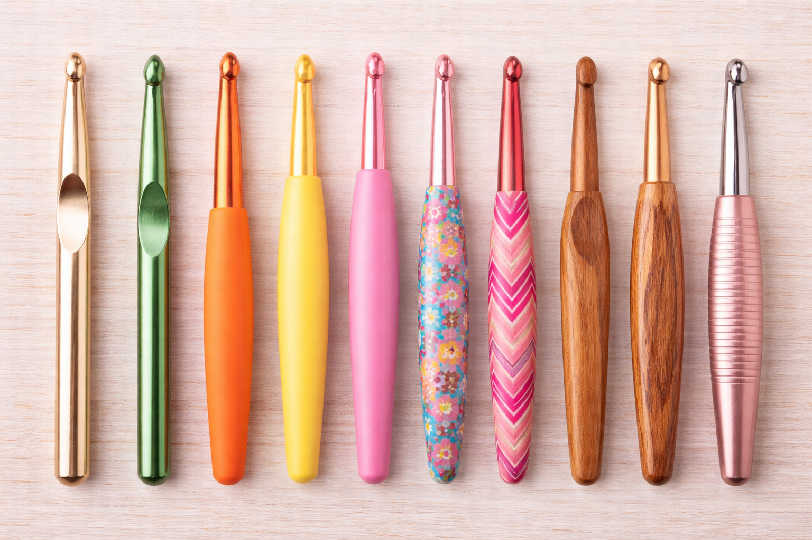

Crochet Hooks
Crochet hooks are one of the most important tools in crochet. They are used to pull yarn through loops and create stitches, turning simple strands of yarn into blankets, clothing, accessories, and more. Crochet hooks come in different sizes, materials, and styles, and each one can affect how your project feels and turns out. Learning the basics of crochet hooks will help beginners choose the right tool and feel more confident when starting a new project.

What are Crochet Hooks?
Crochet hooks are handheld tools with a hooked end that catches yarn and pulls it through loops to form stitches. Unlike knitting, which uses two needles, crochet only requires one hook. Hooks can be made of materials like aluminum, plastic, wood, or bamboo, and each type has its own feel. Some are smooth and quick to work with, while others offer more grip and control. Choosing a hook that feels comfortable in your hand can make learning crochet much easier.Understanding Hook Sizes
Crochet hooks come in many different sizes, and the size of the hook affects the size of the stitches you make. Smaller hooks are used for thinner yarns, creating tighter stitches, while larger hooks are used for thicker yarns, making bigger, looser stitches. Below is a table of common crochet hook sizes and their uses to help you get started.
| US Size | Metric (mm) | Common Use |
|---|---|---|
| B-1 | 2.25 mm | Lace / fine yarn |
| C-2 | 2.75 mm | Light projects |
| G-6 | 4.00 mm | Beginner projects |
| H-8 | 5.00 mm | Most common size |
| J-10 | 6.00 mm | Chunky yarn |
| K-10.5 | 6.50 mm | Thick projects |

Why Hook Size and Type Matter
The size and type of crochet hook matter because they can change the look, feel, and size of a finished project. Using the wrong hook size may make stitches too tight or too loose, or cause the project to turn out larger or smaller than expected. Comfort also matters, especially for beginners who are still learning how to hold the hook and control yarn tension. Choosing a hook that feels good in your hand and matches your yarn can make crocheting more enjoyable and help you create better results.